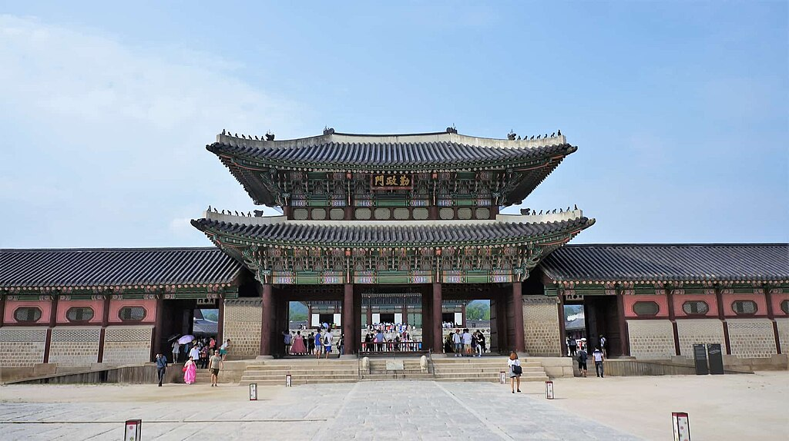
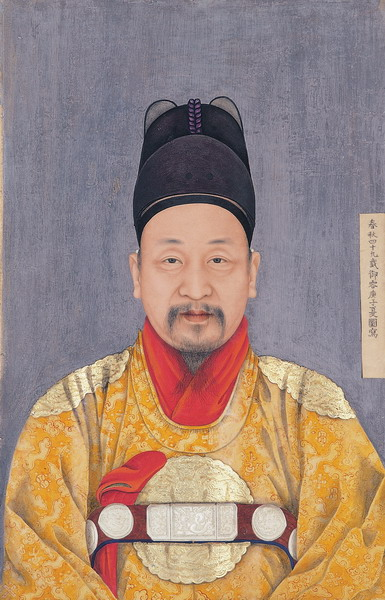
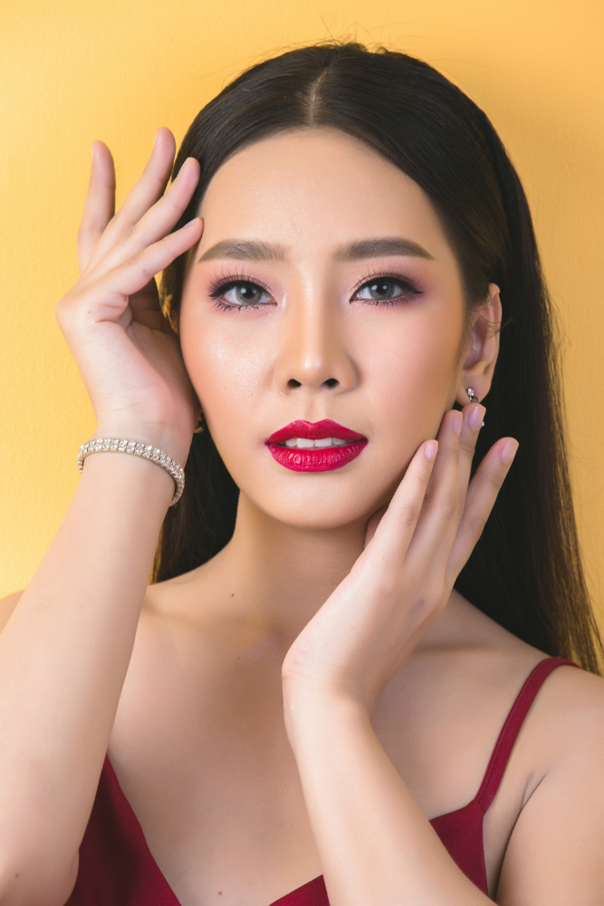

Cuerpo, tecnología, salud y enfermedad
Vamos a Corea del Sur, ¿nos acompañas?

Palacio de Gyeongbokgung. Imagen de Pinterpandai, Wikimedia Commons
En esta ocasión, daremos un breve recorrido por la historia de Corea del Sur, un país que es famoso por su tecnología y cultura pop. En este lugar explicaremos algunos de los conceptos que son muy importantes en la antropología: cuerpo y tecnología, ¿cómo se relacionan? Para realizar esta exploración, te recomendamos mantenerte muy atento para aprender de esta cultura tan distinta y, a la vez, parecida a la nuestra.
Cuerpo y tecnología
¿Alguna vez te has dado cuenta que el cuerpo y la tecnología están ligados? La tecnología la utiliza el ser humano para mejorar y transformar su entorno, y, por qué no, también su cuerpo. Veamos cómo se da esta interacción en Corea del Sur.
Viajamos al siglo XV en Corea del Sur, en la dinastía Joseon. La arquitectura te maravilla, especialmente el palacio real Gyeongbokgung, epicentro del poder político y cultural, y la estructura organizada de la capital, Seúl, dividida en distritos según clases sociales.
En Corea del Sur, el y la se fusionan. La nobleza presta meticulosa atención a su apariencia con trajes detallados y maquillaje discreto. Utensilios y objetos personales reflejan estatus y belleza, mostrando la interrelación entre el cuerpo humano y la tecnología en esta estética única.

Retrato del emperador Gojong de la dinastía Joseon. Imagen de Dyddhkd. Wikimedia commons
¿Qué tiene que ver la tecnología con la ropa y los objetos personales? Cada invención humana es tecnología. Por ende, las herramientas para confeccionar prendas son tecnología, incluyendo la propia ropa que involucra técnicas y conocimientos para mejorar su aspecto y color.
Con lo que observas, notas que el cuerpo refleja el orden social y cósmico, y está sujeto a estrictas normas de vestimenta y comportamiento que marcaban diferencias entre géneros y estatus. La tecnología también se veía como un medio para el bienestar colectivo, usada con prudencia y ligada a la agricultura, artesanía, medicina y más.
Damos un salto a los años 50, en la post Guerra de Corea, con industrialización y urbanización transformadoras. La tecnología impulsa la modernización, influenciando la relación con los cuerpos a través de avances médicos. Lo tradicional se mezcla con lo moderno debido a influencias globales.
Esto último es parte del proceso de globalización, ya que la relación con otros países y culturas promueve los cambios a nivel cultural y en este caso también tecnológico.
Saltamos a la década de 1990, en el que Corea del Sur experimenta un auge económico conocido como el "Milagro del Río Han". El país se convierte en un centro tecnológico y de manufactura global. En este periodo de tiempo observas que la electrónica, la informática y la industria del entretenimiento están floreciendo.
¿Has escuchado hablar del K-pop y el K-drama? Seguramente has visto y escuchado más de una vez novelas coreanas, así como la música del K-pop que es muy popular en todo el mundo. La industria del entretenimiento ha tenido gran influencia en los estándares de belleza de esta cultura, además ha promovido que sea muy común la cirugía plástica. Veamos cómo lo ha hecho.
En esta misma década (1990), surge la “ola coreana” o “Hallyu”, la cual expande la cultura coreana globalmente a través del K-pop, K-drama, moda y más. Estos ídolos influyen en la percepción de belleza con rasgos delicados, ojos más redondos, piel clara y cuerpos esbeltos, presionando a la gente a seguir estos estándares y someterse a cirugías.
My Dearest. K-drama. Imagen de Korea MBC TV.
BTS. Grupo de K-pop. Imagen de Marshmallow9293
¿Habías notado que la cultura coreana también ha influenciado a la nuestra? Hasta el momento habíamos visto ejemplos de cómo una cultura se modifica por influencias externas. Este ejemplo de Corea del Sur hace notar que una cultura, como la nuestra, puede influir en otros países, esto es gracias a la globalización, que permite que el intercambio cultural, político y económico vaya en todas direcciones.
¿Se te ocurre algún ejemplo de cómo la cultura mexicana afecta a otros países? La música mexicana, como el mariachi, es escuchada en muchos países, incluso existen canciones escritas por mexicanos que han sido traducidas a distintos idiomas, otro ejemplo puede ser la gastronomía, los tacos son populares en muchos lugares del mundo.
Finalmente, llegamos a la época actual, en la cual Corea del Sur es líder tecnológico con cultura pop influyente, basada en capitalismo y consumismo.

En Corea del Sur, como en otros países, es muy común utilizar distintos productos de belleza para cambiar el tono de piel, el color y tamaño de los ojos, así como modificar los rasgos faciales. El maquillaje, los lentes de contacto y todos los utensilios utilizados para el maquillaje, también son considerados tecnología. Imagen de jcomp. Freepik
Conforme visitas Seúl, te das cuenta que el cuerpo se ha convertido en un objeto de deseo y consumo, que refleja el estatus, el éxito y la felicidad de los individuos. Los coreanos (tanto hombres como mujeres), se someten a rigurosos procedimientos para alcanzar los estándares de belleza, los cuáles incluyen cirugía plástica, fitness o biohacking.
Para este momento, los dispositivos electrónicos y la conexión en línea son parte integral de la vida cotidiana de los coreanos. La tecnología es esencial en la vida, con innovaciones personalizadas, como los smartphones y smartwatch se integran al cuerpo.
Con todo lo que observas, puedes darte cuenta que este tipo de tecnología no solamente están presentes en este país, sino que también en otras partes del mundo, incluido México.
Salud y enfermedad
La salud y la enfermedad son parte de lo que todo ser humano y sociedad experimenta, Corea del Sur no es la excepción. Realizaremos un breve recorrido por algunas décadas para comprender mejor cómo han sido afectadas la salud y enfermedad de los coreanos debido a la globalización.
Hemos llegado al siglo XV, durante el período de Joseon. En ésta época, la medicina tradicional era la base fundamental para la promoción de la Te acercas a un curandero y te explica que, la salud es vista como el resultado del equilibrio entre el cuerpo y el espíritu, esto se basa en el concepto de qi, que era la energía vital que circulaba por el organismo a través de canales. La salud se mantiene mediante prácticas como la dieta, el ejercicio, la meditación o la acupuntura.
La , según los curanderos, surge por desequilibrios en el qi o la obstrucción, influenciada por factores internos y externos, el yin-yang, fuerzas opuestas en el universo, también influyen en la salud. Las hierbas, masajes y acupuntura son métodos utilizados para curar la enfermedad.
Dongui Bogam es un libro importante de la medicina tradicional coreana. Imagen de Ulrich Lange, Bochum, Germany. Wikimedia Commons
¿Crees que la medicina se refleja en la cultura? ¡Es totalmente cierto!, las creencias influyen en la interpretación de la salud y la enfermedad.
Ahora viajamos al siglo XX. Durante el periodo colonial japonés, te percatas que la medicina occidental fue introducida por los japoneses, coexistiendo con la medicina tradicional. A pesar de la influencia extranjera, la medicina tradicional aún tiene un lugar complementario en la sociedad.
La globalización impacta en los hábitos alimenticios y estilo de vida. La dieta coreana, antes rica en vegetales y arroz, se ve influida por la comida rápida occidental y los alimentos procesados, resultando en enfermedades como obesidad y diabetes.
¿Esto te suena familiar? Los problemas en la salud asociados a la dieta, son un problema recurrente en muchos países, incluido el nuestro.
La "ola coreana" a finales del siglo XX promueve una estrecha asociación entre belleza y éxito. Los estándares occidentales influyen en la apariencia física, impulsando prácticas como cirugías plásticas, maquillaje y peinados. A su vez, el crecimiento económico incrementa la competencia laboral, generando enfermedades mentales como ansiedad, depresión y estrés. Para la sociedad coreana, hablar de es tabú, visto como un problema privado, que debe ser ignorado o reprimido ya que consideran prioritario adaptarse, aceptar y cumplir las normas sociales.
¿La cultura afecta a la salud mental? Cierto, la salud mental tiene distintas concepciones desde la cultura, en este caso la salud mental no toma importancia para los coreanos, ya que es más importante para ellos tener belleza y éxito profesional, lo que paradójicamente afecta aún más la salud de las personas.
Ahora nos encontramos a inicios del siglo XXI, en esta época puedes ver cómo las percepciones de salud y enfermedad han cambiado, por ejemplo, la salud mental comienza a verse como un asunto colectivo y público, con énfasis en la prevención y reducción de riesgos Sin embargo, las enfermedades y la salud mental siguen siendo un tema tabú en la sociedad.
El burnout es muy común en Corea del Sur, las exigencias sociales y laborales, llevan a las personas a sobrepasar sus límites de estrés y cansancio, lo que deriva muchas veces en problemas de salud mental y física. Imagen de wavebreakmedia. Freepik
Con curiosidad observas que el “Hallyu”, las redes sociales y la tecnología exponen a idealizadas imágenes de belleza, aumentando la demanda de cirugías plásticas, por esta razón la búsqueda de la perfección estética lleva a una preocupación constante por la apariencia y, en muchos casos, a problemas de salud mental, como la baja autoestima, la ansiedad y la depresión.
Te percatas que la globalización ha traído avances en la atención médica, la cual ha prosperado gracias a la investigación, la innovación y la cooperación, pero también ha traído desafíos en términos de enfermedades relacionadas con el estilo de vida. La combinación de la medicina tradicional y occidental refleja la adaptación y la mezcla de culturas a lo largo de la historia de Corea del Sur.
Llegamos al año 2021, en el cual la pandemia por COVID-19 tiene un gran impacto en todo el mundo, gracias a la capacidad de innovación, Corea del Sur ha sido uno de los países más exitosos en la contención y control del virus ya que han utilizado su tecnología y cultura a su favor.
¿Por qué crees que el coronavirus se convirtió en un problema de salud pública a nivel mundial tan rápidamente? Como seguramente recuerdas, este virus tardó unos cuantos meses en extenderse por todo el mundo. Esto en gran medida se debe a la globalización, ya que el constante flujo de gente de un país a otro permitió que el coronavirus se propagara fácilmente.
Sin duda, te has podido dar cuenta que la cultura coreana tiene una gran influencia en la forma en la que su sociedad concibe la salud y la enfermedad, aunado a esto la globalización es parte importante de los cambios que han tenido lugar en este país.
¡Todo está preparado!

Cuerpo, tecnología, salud y enfermedad
Comprueba todo lo que has aprendido hasta ahora con la siguiente actividad.
¿Qué tal te ha ido en esta actividad? Seguramente estos conceptos ya los dominas a la perfección.
Antes de continuar al siguiente y último subtema, te pedimos que pienses en cómo ha influido en tu vida cotidiana la tecnología.